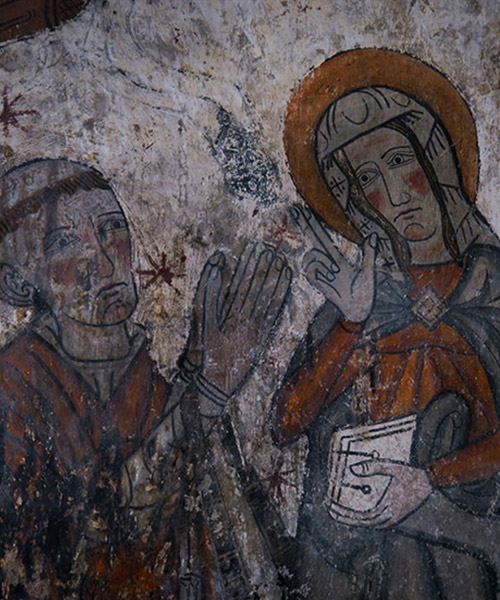
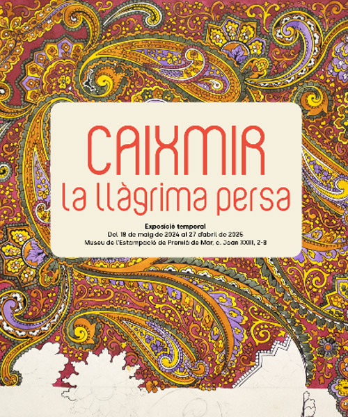
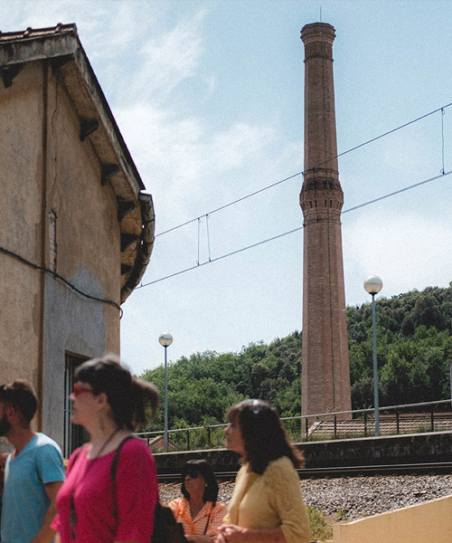
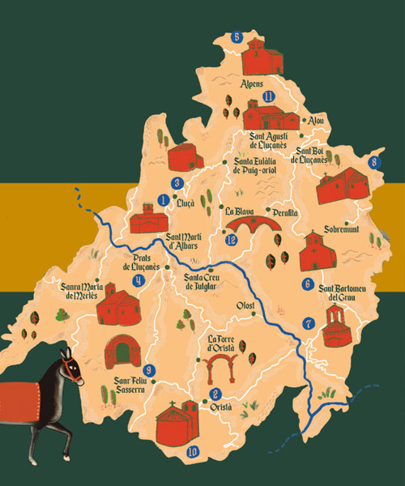
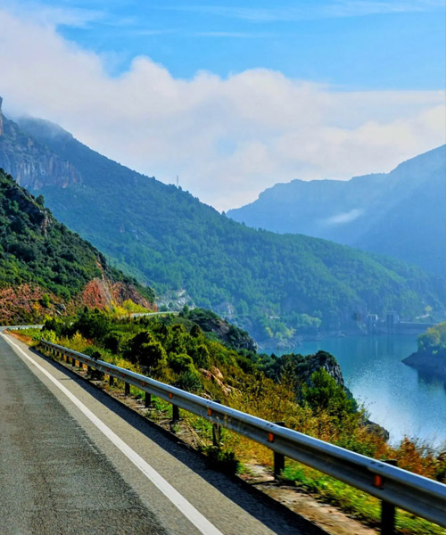
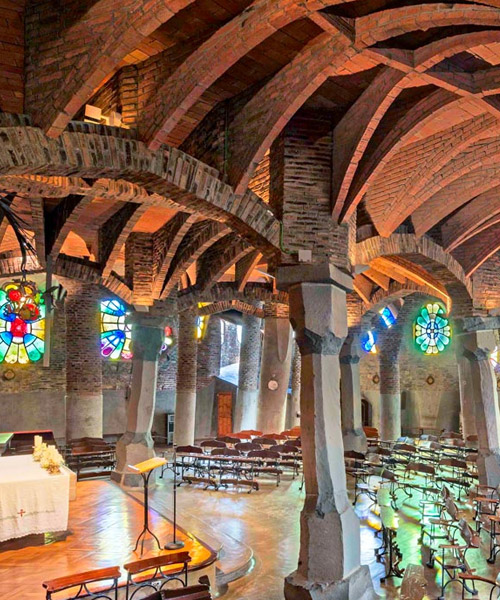
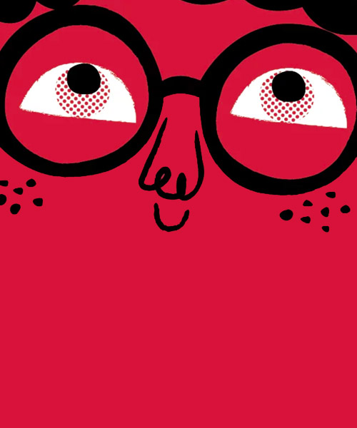
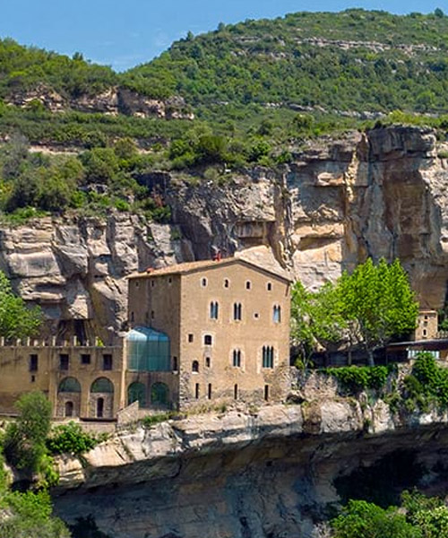
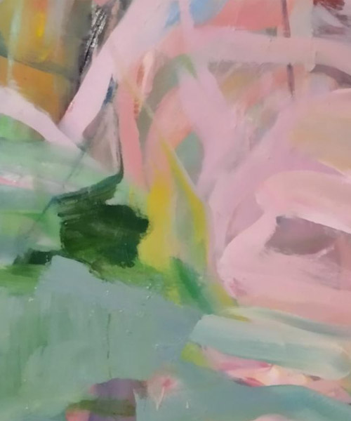
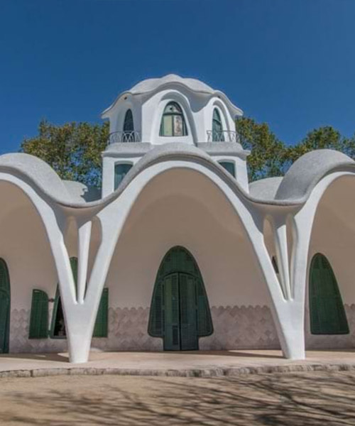

Actividades culturales
No solo de pan vive el hombre, dice el aserto popular. También hay que alimentar la parte intangible que nos define. Y quienes planean la manera de invertir productivamente el tiempo de asueto navideño, no olvidan las propuestas culturales que alimentan el espíritu. Visitas guiadas, exploraciones, redescubrimientos artísticos, arquitecturas al alcance...


La iglesia románica de Sant Vicenç de Rus, consagrada en 1106, ofrece visitas guiadas para descubrir su arquitectura y las reproducciones de las pinturas originales, conservadas en el museo de Solsona. Una experiencia única en un entorno natural ideal para disfrutar en grupo.

Esta exposición revela la trayectoria de cachemira, un diseño atemporal que ha marcado la moda durante más de 400 años. Se exhiben piezas de los principales museos textiles de Catalunya, obras de estudiantes y creaciones de la artista textil Sylvia Calvo.

Cada tercer domingo de mes, una visita guiada permite explorar la historia y la arquitectura de esta antigua colonia textil de origen escocés, declarada Bien Cultural de Interés Nacional. Un recorrido por el teatro casino, las calderas y otros espacios singulares.

Conviértete en peregrino medieval y descubre los monumentos románicos del Lluçanès con un mapa interactivo. Hazte selfies delante de cada monumento, responde a preguntas y acumula monedas virtuales para conseguir un obsequio especial.

El tramo 4 del Grand Tour te invita a disfrutar de la naturaleza pasando por Gósol, pueblo que inspiró a Picasso, y seguir los caminos de los cátaros. La imponente silueta del Pedraforca te acompañará en esta experiencia única por el Berguedà.

El Cava Centre ofrece una experiencia audiovisual inmersiva para descubrir los orígenes, historia y secretos del cava. Explora curiosidades como el origen de las burbujas o el uso del tapón de corcho en un viaje sensorial único.

En la Colonia Güell Gaudí experimentó por primera vez con las innovaciones arquitectónicas que después aplicaría en la Sagrada Família. Una joya inacabada que él mismo describió como una "maqueta monumental" de su gran proyecto.

Los Jardins Artigas son una obra desconocida de Gaudí, creada como agradecimiento a la familia Artigas. Situados en el Valle de Lillet, fusionan naturaleza y arquitectura, y ofrecen una vista única de la creatividad del maestro modernista.

La exposición "Montserrat, 1.000 años", en el Palau Robert, recoge los sentimientos y la historia de generaciones que han vivido la montaña como símbolo de fuerza y espiritualidad. Desde la fundación del monasterio hace mil años, Montserrat ha sido referencia para los catalanes.

Para conmemorar el centenario del nacimiento de Antoni Tàpies, el Museo de Arte Medieval (MEV) presenta la portada que el pintor creó para la revista Cavall Fort en 1967, acompañada de un texto sobre el arte escrito por él.

Visita al conjunto monumental de Sant Miquel del Fai, donde la fuerza del agua ha creado un paisaje singular. Descubre una exposición, audiovisuales y un itinerario que transcurre por los puntos de interés de este entorno privilegiado.

Exposición temporal de cerámica contemporánea con las obras de Anne Laure Cano y Jim Gladwin. Inspirados en la tradición ceramista de Esplugues y la historia de la fábrica Pujol i Bausis, los artistas presentan obras que sorprenden por su intensidad, texturas y originalidad.

Carme Porta presenta su exposición de pintura "Alternança", donde explora el cambio y el movimiento a través de la naturaleza y la tradición. Con decididas pinceladas, crea espacios llenos de energía que, pese a su apariencia caótica, buscan establecer un orden.

Visita las minas de Gavà, las más antiguas de Europa, donde podrás descubrir cómo vivían los hombres y mujeres del neolítico hace 6000 años. Este yacimiento único revela las técnicas de extracción de variscita, un mineral ornamental, ofreciendo una mirada excepcional sobre la época neolítica.

Explora la arquitectura de Lluís Muncunill en Terrassa: el Ayuntamiento, la Torre del Palau, la masía Freixa y la antigua fábrica Vapor Aymerich. Una ruta exclusiva que culmina con una pequeña cata.